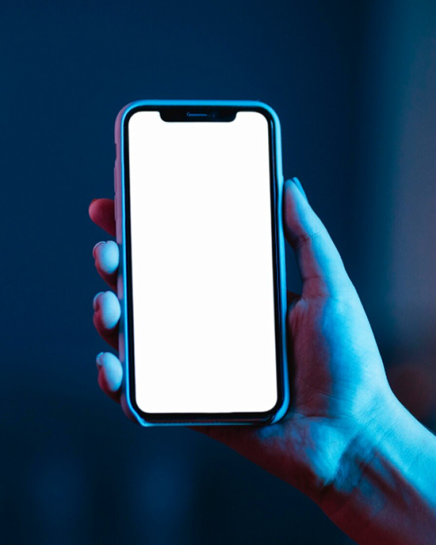

01
Понимает свободный вопрос
Пациенту не нужно выбирать готовую кнопку или знать медицинские термины. Он пишет как умеет, а консультант понимает суть запроса.
Отвечает пациентам живым языком, работает по базе знаний клиники и помогает довести вопрос до обращения. Администратор получает не холодный контакт, а диалог с понятным контекстом.
Пациент задаёт вопрос своими словами. ИИ понимает смысл, отвечает по базе клиники и ведёт к следующему шагу: уточнению, материалу, акции или заявке.

Пациенту не нужно выбирать готовую кнопку или знать медицинские термины. Он пишет как умеет, а консультант понимает суть запроса.
ИИ использует данные клиники: услуги, цены, врачей, акции, FAQ, условия, гарантии и другие материалы, которые вы передаёте для обучения.
Объясняет сложные услуги понятно и спокойно: без сухих шаблонов, канцелярита и ощущения, что пациент общается с формой заявки.
Если человек боится боли, цены или осложнений, консультант отвечает спокойно, снимает часть напряжения и помогает не потерять пациента до заявки.
Может задать уточняющий вопрос, показать видео врача, рассказать об акции, предложить консультацию или передать обращение администратору.
Клиника получает не просто имя и телефон, а историю диалога: что спрашивал пациент, чем интересовался и какие сомнения нужно закрыть.
В 2026 году люди устали от виджетов обратного звонка. Старый подход — сразу просить телефон. Новый подход — сначала ответить на вопрос. Для стоматологии это критично: пациент боится, сомневается в цене и не готов сразу говорить с администратором.
Часто человек не знает, как правильно сформулировать вопрос: «А если давно нет зуба?», «А если кость ушла?», «Это больно?», «Почему так дорого?», «А если не приживётся?». Если сайт не помогает разобраться в момент интереса, пациент просто уходит сравнивать дальше.
Пациент получает ответ в момент сомнения и чаще переходит к следующему шагу: консультации, записи или уточнению деталей.
ИИ берёт на себя повторяющиеся вопросы по услугам, ценам, акциям, врачам и условиям. Телефон не занят типовыми уточнениями.
ИИ-консультанта можно встроить в ключевые секции сайта: имплантация, рассрочка, врачи, акции. Пациент нажимает кнопку в нужном блоке — и сразу получает диалог по этой теме.
Не все полезные диалоги заканчиваются заявкой. Раз в месяц клиника получает отчёт по таким обращениям: где пациенты сомневаются, какие вопросы остаются без ответа и почему человек не дошёл до записи. Эти данные помогают точнее доработать сайт, рекламу и работу администраторов.
Топ вопросов
Без ответа на сайте
Никакой разовой разработки и месяцев ожидания. Подключаете консультанта, обученного на материалах вашей клиники, и платите только пока он работает.
Для стоматологических клиник
После первых кейсов: 59 000 ₽/мес + подключение отдельно
Пилотный запуск
После пилота можно перейти на основной тариф без повторного старта
Начните с мини-аудита сайта. Мы посмотрим, какие вопросы клиентов сейчас остаются без ответа, где человек может застрять перед заявкой и какие сценарии можно закрыть ИИ-консультантом.